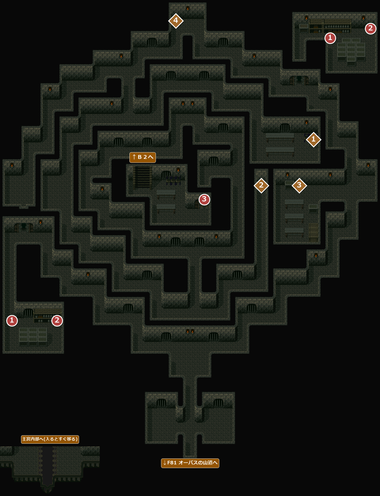
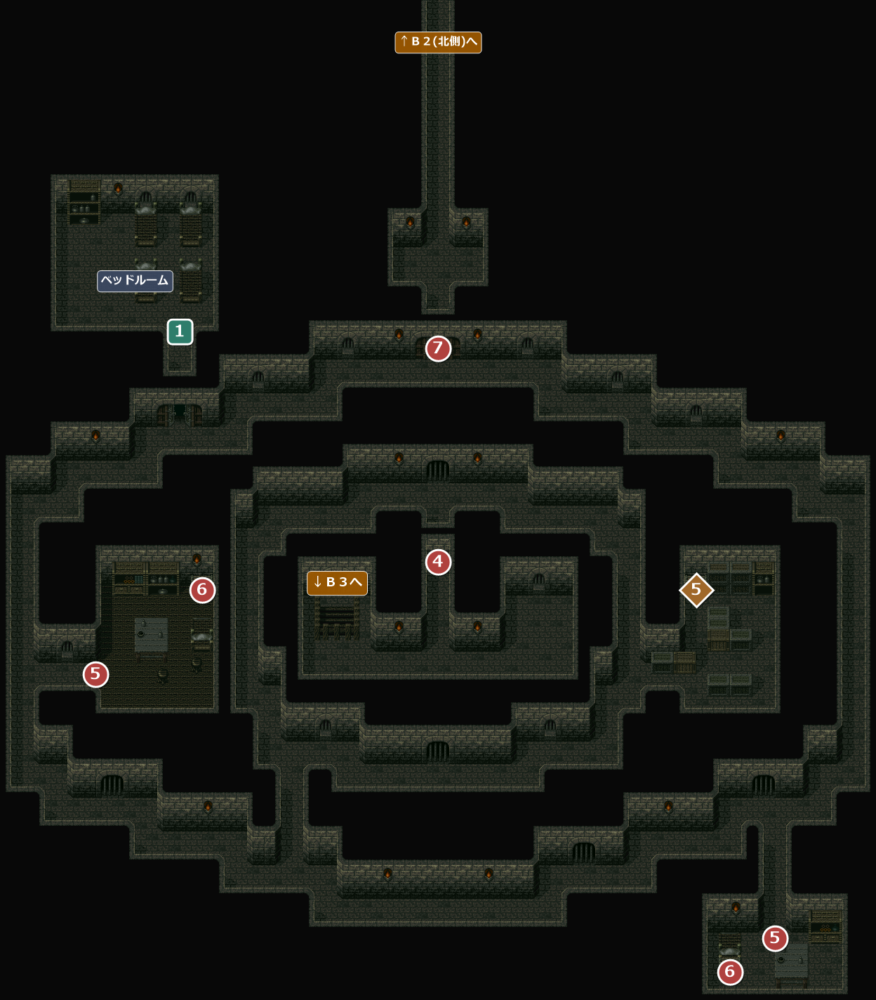
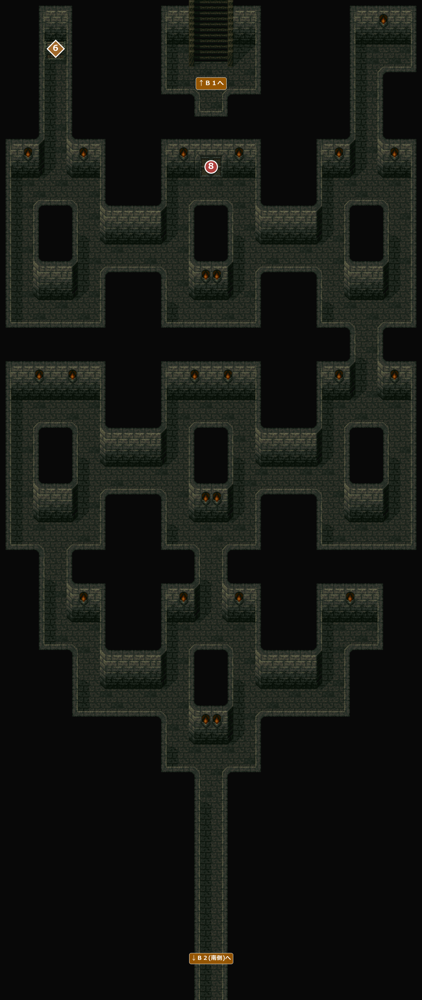
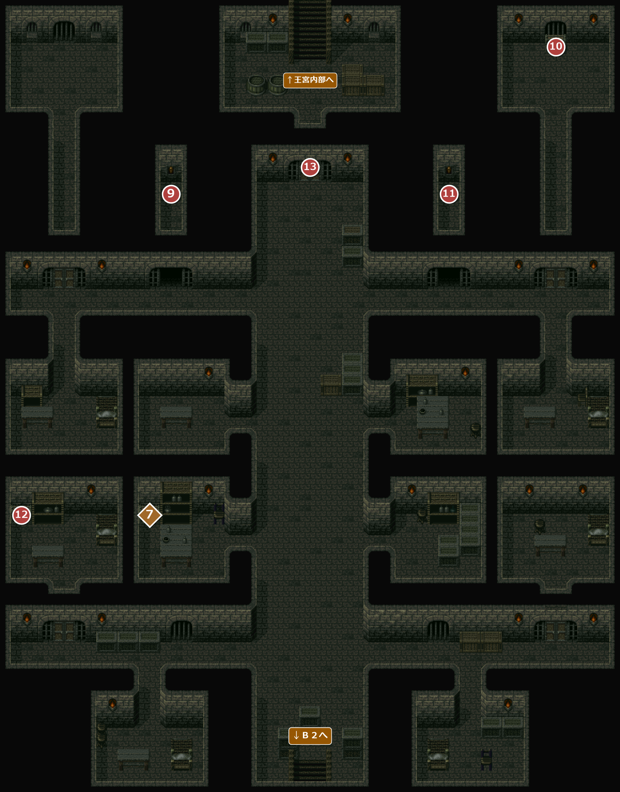
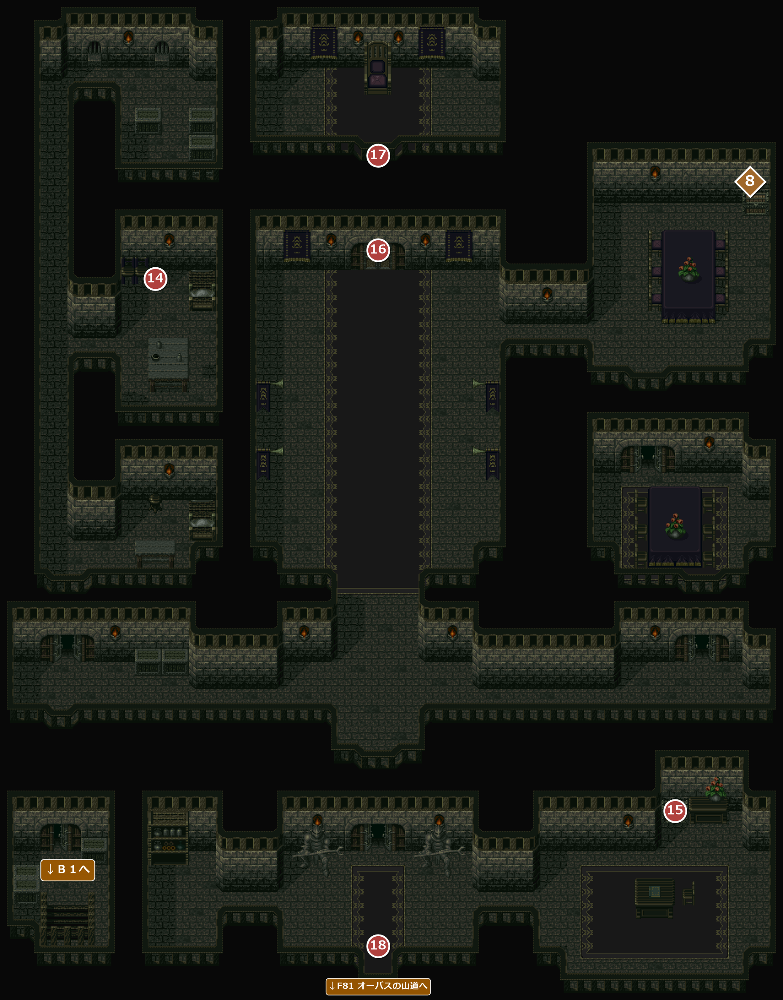

FIELD82
要塞迷路・王宮内部
エンカウント率1.17% / 1.56%海賊が近海を荒らしていた時代、島が要塞として使われていた頃に造られた、縦横に広がる地下の迷路。そのまま王宮の地下につながっている。オーパスの山道の洞窟から入り、鍵の扉を開けながらＢ３から上って、最上階の王宮内部でエドと対決する。
名前 建物・場所→ ほかの FIELD へ1メインイベント1サブイベント1宝箱・落ちている物
8200Ｂ３

エンカウント
1歩ごとに 1.17%(平均 85.3 歩に1回)。戦闘になったときに出る組と、その確率:
| ID | 確率 | 前列 | 後列 |
|---|---|---|---|
| 187 | 44.4% | ダストデビル | － |
| 188 | 55.6% | ダストデビル×2 | － |
！地図の左下の小さな区画は、迷路とはつながっていない。王宮内部の南側とほぼ同じ絵の写しで、王宮内部から戻った後にF81 オーパスの山道の北東の洞窟から入ると、一瞬だけここに出て、すぐに王宮内部の同じ場所(南の扉の内側)へ移る。王宮から出るときはここを通らない。
別の FIELD から2つ目以降の地図へ直接入る移動はほかの場所(火口湖など)にもあり、なぜここだけ写しを経由させたのかはデータからは分からない。一瞬映っても違和感が出ないよう、同じ見た目の写しを置いたと見られる。
別の FIELD から2つ目以降の地図へ直接入る移動はほかの場所(火口湖など)にもあり、なぜここだけ写しを経由させたのかはデータからは分からない。一瞬映っても違和感が出ないよう、同じ見た目の写しを置いたと見られる。
イベント
1
城兵戦闘
場所: Ｂ３の西の通路(X2-6 Y135)・北東の部屋の中(X138 Y15-19)
城兵に見つかり、戦闘になる。奥の宝箱(②)の手前で、2か所とも通る必要がある。それぞれ1回だけで、2か所は順不同。
戦闘城兵×3(前列)
！城兵との戦闘はすべて逃げられる(逃げても二度と出ない)。
次へ奥の宝箱へ(②)。
2
要塞の鍵
場所: Ｂ３の南西の部屋(X22-24 Y139)・北東の部屋(X154-156 Y15)の宝箱
「箱を開けると、中には要塞の鍵が入っていた。」2つとも必要(Ｂ３の扉に1本、Ｂ２に上がってすぐの扉④に1本)。2か所は順不同。
入手 要塞の鍵
要塞の鍵
次へ中央の部屋の扉へ(③)。
3
鍵のかかった扉
場所: Ｂ３の中央の部屋の南東の扉(X84-86 Y83)
要塞の鍵を使うと開き、中の階段からＢ２へ上がれる。鍵は使うとなくなる。
次へＢ２へ(④)。
宝箱・落ちている物
1
宝箱
場所: Ｂ３の東の部屋(X130-132 Y63)
「箱を開けると、中には古い楽譜が入っていた。『幻惑の歌』だ！」
入手 幻惑の歌
幻惑の歌
2
宝箱
場所: Ｂ３の東の部屋の南西(X108-110 Y81)
「箱を開けると、中にはのどあめＤＸが入っていた。」
入手 のどあめＤＸ×5
のどあめＤＸ×5
3
宝箱
場所: Ｂ３の東の部屋の南(X124-126 Y81)
「箱を開けると、中にはのどあめＤＸが入っていた。」
入手のどあめＤＸ×5
4
宝箱
場所: Ｂ３の北の端(X72-74 Y11)
「箱を開けると、中には薬のビンが入っていた。」
入手 銀色の小ビン×5
銀色の小ビン×5
8201Ｂ２(南側)

エンカウント
1歩ごとに 1.17%(平均 85.3 歩に1回)。戦闘になったときに出る組と、その確率:
| ID | 確率 | 前列 | 後列 |
|---|---|---|---|
| 187 | 33.3% | ダストデビル | － |
| 188 | 33.3% | ダストデビル×2 | － |
| 189 | 33.3% | ダストデビル | ダストデビル×2 |
！北へ延びる長い廊下は1本につながって見えるが、途中(X78-80 Y15)で別の地図(Ｂ２(北側))に切り替わる。2つの地図の廊下の端が重なるように描かれているので、切り替わりに気づきにくい。
イベント
4
鍵のかかった扉
場所: Ｂ２の階段のある部屋の北の扉(X78-80 Y103)
上がってきた部屋は鍵の扉で閉じられている。要塞の鍵で開く。
次へ西と南東の部屋へ(⑤)。
5
城兵戦闘
場所: 西の部屋の入口(X18 Y119-123)・南東の部屋への通路(X138-140 Y167)
城兵に見つかり、戦闘になる。奥の宝箱(⑥)の手前で、2か所とも通る必要がある。それぞれ1回だけで、2か所は順不同。
戦闘城兵×3(前列)
！逃げられる。
次へ奥の宝箱へ(⑥)。
6
要塞の鍵
場所: 西の部屋(X36-38 Y107)・南東の部屋(X130-132 Y175)の宝箱
「箱を開けると、中には要塞の鍵が入っていた。」2つとも必要(北の扉⑦と、Ｂ２(北側)の扉⑧に1本ずつ)。2か所は順不同。
入手要塞の鍵
次へ北の扉へ(⑦)。
7
鍵のかかった扉
場所: 外周の通路の北の扉(X78-80 Y65)
要塞の鍵で開く。北へ長い廊下が延びている。
次へ廊下を北へ(⑧)。
サブイベント
1
ベッドルーム
場所: Ｂ２の北西の部屋の入口(X32-34 Y59)
「おや、ここには気持ちのよさそうなベッドがある…」。無料で休めて、冒険の記録もできる。「休まない」などを選ぶと1歩押し戻される。
バグ「休まない」を選んだ後、押し戻される間に左キーを押し続けていると、部屋の中へ入れてしまう。
このマスは部屋の床の一番下の段にあり、左右にも床が続いているため。部屋の中から外へ出ようとしてこのマスを踏んでも同じ選択肢が出て、出ていくところなのに「おや、ここには気持ちのよさそうなベッドがある…」と言ってしまう。
このマスは部屋の床の一番下の段にあり、左右にも床が続いているため。部屋の中から外へ出ようとしてこのマスを踏んでも同じ選択肢が出て、出ていくところなのに「おや、ここには気持ちのよさそうなベッドがある…」と言ってしまう。
宝箱・落ちている物
5
宝箱
場所: Ｂ２(南側)の東の部屋(X124-126 Y107)
「箱を開けると、中には古い楽譜が入っていた。『土の手の歌』だ！」
入手 土の手の歌
土の手の歌
8202Ｂ２(北側)

元のマップは 60×90 マス。左約9マス・右約13マスの何もない部分を切って載せている。
エンカウント
1歩ごとに 1.17%(平均 85.3 歩に1回)。戦闘になったときに出る組と、その確率:
| ID | 確率 | 前列 | 後列 |
|---|---|---|---|
| 187 | 33.3% | ダストデビル | － |
| 188 | 33.3% | ダストデビル×2 | － |
| 189 | 33.3% | ダストデビル | ダストデビル×2 |
イベント
8
鍵のかかった扉
場所: Ｂ２(北側)の上の扉(X54-56 Y33)
要塞の鍵で開く。奥の階段からＢ１へ上がれる。
次へＢ１へ(⑨)。
宝箱・落ちている物
6
宝箱
場所: Ｂ２(北側)の北西の通路の奥(X26-28 Y11)
「箱を開けると、中には古びた楽譜が入っていた。」
入手 全快の歌
全快の歌
！ほかの楽譜の宝箱と違い、曲名が出ない(歌は覚えている)。
8203Ｂ１

エンカウント
1歩ごとに 1.56%(平均 64 歩に1回)。戦闘になったときに出る組と、その確率:
| ID | 確率 | 前列 | 後列 |
|---|---|---|---|
| 187 | 33.3% | ダストデビル | － |
| 188 | 22.2% | ダストデビル×2 | － |
| 189 | 44.4% | ダストデビル | ダストデビル×2 |
イベント
9
西のレバー
場所: 北の扉の左の小部屋(X32-34 Y35)
「レバーを下げる」と「おや？ どこかで扉の開く音が…」。東側の扉が開き、⑩の宝箱へ行けるようになる。⑨⑩と⑪⑫は順不同。
次へ⑩へ。
10
割れたピック
場所: 北東の部屋の宝箱(X104-106 Y11)
「箱を開けると、中には半分に割れたピックが入っていた。」
入手 割れたピック
割れたピック
次へ東のレバーへ(⑪)。
11
東のレバー
場所: 北の扉の右の小部屋(X84-86 Y35)
「レバーを下げる」と、西側の扉が開き、⑫の宝箱へ行けるようになる。
次へ⑫へ。
12
割れたピック
場所: 西の部屋の宝箱(X4-6 Y99)
「箱を開けると、中には半分に割れたピックが入っていた。」
入手割れたピック
次へ北の扉へ(⑬)。
13
ピックの扉
場所: Ｂ１の北の扉(X58-60 Y35)
扉の両側のへこみに、割れたピックを2枚はめると開く。奥の階段から王宮内部へ上がれる。
！1枚だけで使うと「ピックは１枚しかない。もう１枚必要だ。」
次へ王宮内部へ(⑭)。
宝箱・落ちている物
7
宝箱
場所: Ｂ１の西の部屋の右隣(X28-30 Y99)
「箱を開けると、中にはリュートのパーツが入っていた。白木でできた響きのいい胴だ。」
入手 白の胴
白の胴
！白の胴は、リュートの胴の最強装備(LUTE +15)。
8204王宮内部

エンカウント
1歩ごとに 1.17%(平均 85.3 歩に1回)。戦闘になったときに出る組と、その確率:
| ID | 確率 | 前列 | 後列 |
|---|---|---|---|
| 187 | 33.3% | ダストデビル | － |
| 188 | 33.3% | ダストデビル×2 | － |
| 189 | 33.3% | ダストデビル | ダストデビル×2 |
イベント
14
従僕
場所: 王宮内部の西の部屋(X24 Y41)
城主は中央の間に鍵をかけてこもっている。合鍵は暗号錠の箱の中にあり、城主様の名前を入れれば開く(ほかの文字だと呪われる)と従僕が明かす。
次へ南東の部屋の箱へ(⑮)。
15
暗号錠の箱
場所: 南東の部屋の箱(X100-102 Y123)
文字を2つ選んで入れる。「エ」→「ド」で開き、城のカギが手に入る。
入手城のカギ
！間違えると並びの1人目に  青の呪いがかかる。何度でもやり直せる。
青の呪いがかかる。何度でもやり直せる。
！従僕(⑭)の話を聞く前は文字を選べず、「適当に入れる」と呪われるだけ。
次へ中央の間の扉へ(⑯)。
16
中央の間の扉
場所: 大広間の北の扉(X56-58 Y41)
城のカギで開く。
次へ玉座へ(⑰)。
17
18
南の扉
場所: 王宮内部の南の扉(X56-58 Y147)
エドが、自分にとりついた正体を突き止めて囚人島を封じるため、一緒に島へ行ってほしいと頼む。信じきれないアロンは抜けてオーパス村へ戻り、エドが仲間になる。
加入エド
離脱アロン
！エドを倒す前は「この扉には鍵がかかっている。」
バグエドを倒した後、南の扉を通らずに迷路を引き返してＢ３から山道へ出ると、エドが仲間にならないまま外に出てしまい、話が先へ進まない(迷路を通って王宮内部へ戻り、南の扉から出れば進む)。エスタンシアの音楽院では正面玄関から出させるために下水道へ戻れないよう作られているが、ここにはその仕掛けが無い。
次へ山道の北東の洞窟の前へ出る(F81 オーパスの山道)。
宝箱・落ちている物
8
宝箱
場所: 王宮内部の北東の部屋(X112-114 Y33)
「箱を開けると、中には古い楽譜が入っていた。『熱地獄の歌』だ！」
入手 熱地獄の歌
熱地獄の歌